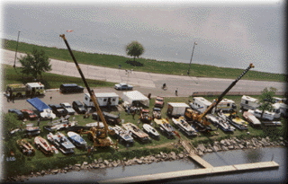
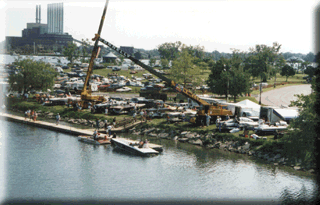

The $5 Belle Isle Pit Pass is good for any one day of the event. We have far too many boats to fit into the main Dodge Pits, and our recently expanded pit area on Belle Isle is home to the Unlimited Light, Grand Prix, Jersey Speed Skiff and Outboard Performance Inflatable classes.
For parking information, see the Belle Isle Map. Proceeds from this ticket go to Belle Isle Parks and Recreation.


The race courses are not directly visible from this area. With a short walk to the East (left, in the above photo) you can see a little of the course, but better race viewing is available less than a mile West (closer to the Belle Isle beach). Remember that viewing from Belle Isle is free.
 Return to the Ticket Info page.
Return to the Ticket Info page.
All contents Copyright © 1997 Spirit of Detroit THUNDERFEST, except where noted.
Web page created by Brian Reed.
 Return to the Top THUNDERFEST page.
Return to the Top THUNDERFEST page.
All Rights Reserved.